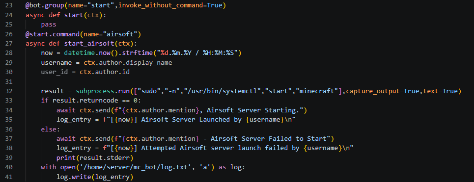

Python-Based Discord Bot
I designed and implemented a Python-based Discord bot for the purpose of allowing selected players to remotley control my self-hosted minecraft servers running on a linux environment. The bot uses the discord.py library, linux's systemd services and minecraft's RCON protocol to allow players to start, stop and view the status of servers - including which who is currently online on which server.

What I Learned
Security
Due to the nature of the service - in that it would be hosted on my home network - I learned the importance of implementing proper security measures to protect my device and the data stored within against unauthorized access. To make sure that this was the case, I implemented several security measures including:
- The Bot runns off a dedicated account - this ensures that the bot has permission to exclusivly run system commands that are related to the functionality of the bot and cannot access other parts of the system.
- Stored credentals securely in environment variables - allows the bot to access them without hardcoding. Keeping details away from the source code like this helps as even if someone gains access to the bot's source code, they cannot access the sensitive information such as idenficaiton token for the bot or server interface credentials.
- As the bot and servers are hosted on the same machine, I limited RCON access to localhost. This meant that the device did not have any unnecessary public network exposure.
A snippet of the code in this project is shown above, however, the full implementation can be found on my GitHub profile.